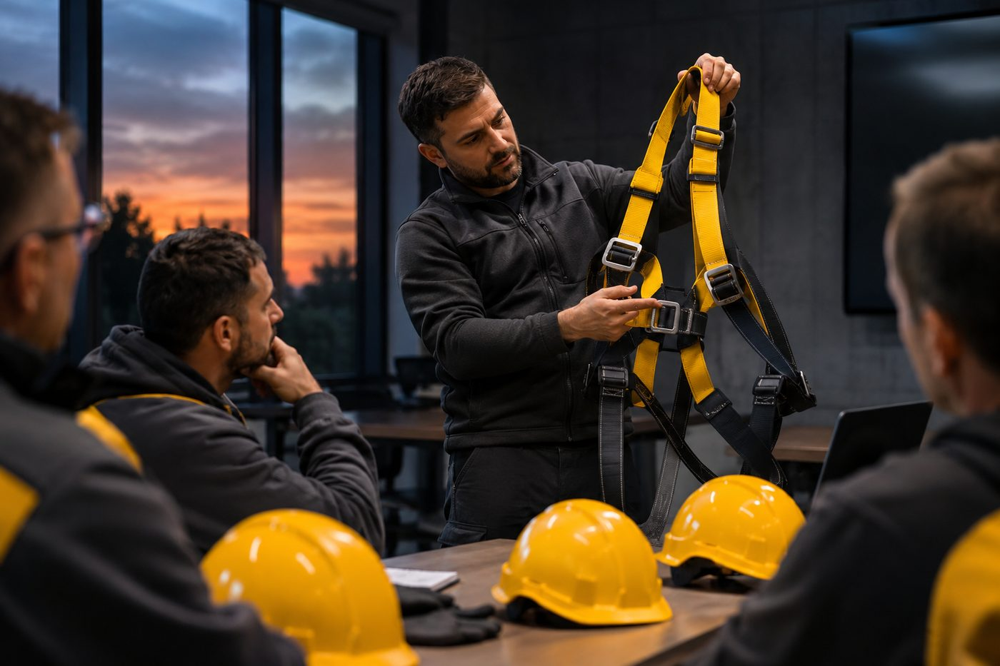
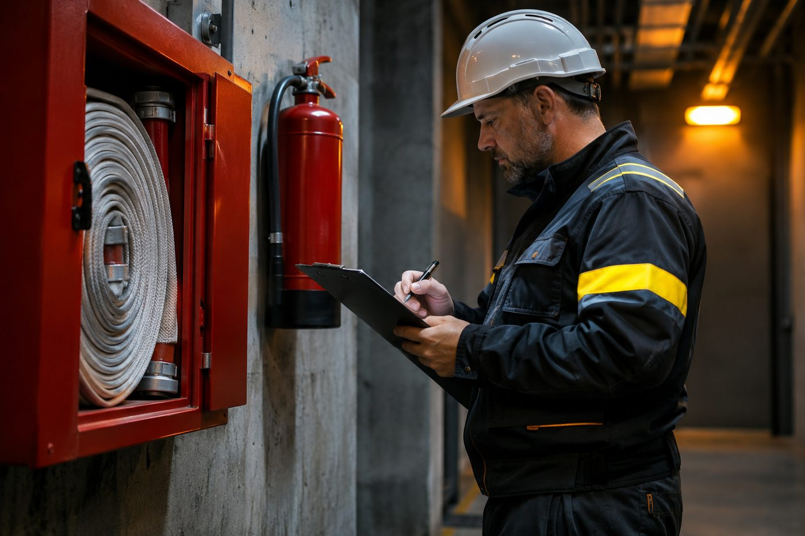

Služby
Komplexné služby v oblasti bezpečnosti a ochrany zdravia pri práci, civilnej ochrany a ochrany pred požiarmi.
01
Bezpečnostnotechnická služba
Dodávateľský výkon BTS pre firmy a organizácie.
02
Koordinácia na stavenisku
Koordinácia bezpečnosti pri príprave aj realizácii stavby.

03
Školenie BOZP
Školenia zamestnancov a vedúcich zamestnancov.

04
Ochrana pred požiarmi
Ochrana pred požiarmi dodávateľským spôsobom.
Kurzy
Odborná príprava pre profesie, kde bezpečnosť rozhoduje.
O nás
Odborníci s dlhoročnou praxou
Pro Safety s. r. o. vznikla v roku 2025 ako nástupca fyzických osôb podnikajúcich v oblasti BOZP. Služby vykonávajú osoby s odbornou spôsobilosťou a skúsenosťami z reálneho pracovného prostredia.
Oprávnenia NIP
Na školenia BOZP, bezpečnostnotechnickú službu a ochranu pred požiarmi dodávateľským spôsobom.
Úrazy a havárie
Pomoc pri vyšetrovaní závažných pracovných úrazov, chorôb z povolania, havárií a požiarov.
Kontroly
Zastupovanie zmluvných partnerov pri kontrolách Inšpektorátu práce a Štátneho požiarneho dozoru.
BOZP · CO · OPP
Komplexné bezpečnostné služby v súlade s legislatívou.
Kancelária Prosafety
Ozvite sa nám
Štúrova 3/6, 040 01 Košice